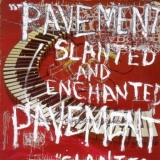

By No Ripcord Staff
We've reached the penultimate part of our two week list and it's a pretty safe bet that these awesome records will rock your socks.
10. The Magnetic Fields
“69 Love Songs”
(Merge – 1999)
Understandably given its length, 69 Love Songs has plenty to offer besides romance; there’s bitterness, despair, lessons about 19th century linguists, sage advice in matters of both the heart and business, and healthy doses of cynical wit and outright dishonesty (for a start, it should really have been called '67 Love Songs And A Couple Of Thankfully Short Skits'). In fact, there’s so much here that it could be a bit of a cheat viewing it as one album; on its initial release it was offered to consumers both as the full package and three separate CDs (each lengthy enough on its own). Truthfully though, there’s a reason why its only available in the whole almost-three-hour version today, in that dividing up the work neuters both its concept (a staggeringly, show-off-y diverse range of songs about love, rather than love songs in themselves) and one of its great pleasures, in that it’s a record that seems to be constantly developing; while much of its appeal is immediate - thanks to frontman/mastermind Stephin Merritt’s songwriting prowess - certain tracks and even parts of the album might take years to fully appreciate. Given the intellectual nature of The Magnetic Fields’ material, this was far from the first dip the band had made into concept album territory. However, whereas those past attempts had been based around mining a particular style or sound, the thematic approach to this album allowed them to indulge their myriad tastes and influences, creating a work that jumped between folk, country, techno and pop (and most places in between) and hit the target (pretty much) every time. It’s also testament to Merritt’s knack for melody that what could have easily been an extremely patchy exercise in throwing-things-against-the-wall-and-seeing-what-sticks songwriting (to be fair, that might still describe the process behind the album), genuinely turned out to be an album to immerse oneself in, capable of rewarding not just repeated but obsessive listening (or failing that, at least provide more than enough fodder for a score of romantic mixtapes/post-break-up playlists). Mark Davison
Playlist: The Book Of Love
9. Pavement
“Slanted And Enchanted”
(Matador – 1992)
Writing about Slanted & Enchanted in our top 100 debuts feature a few years ago, Stephen Wragg concluded that "Pavement achieved perfection in imperfection." It's impossible to argue with that. As the '90s progressed, Pavement managed to subtly refine their sound without losing the sense that they weren't trying particularly hard; 1999's Nigel Godrich produced swansong Terror Twilight almost sounds polished. Yet despite evolving into a more competent band of players, Pavement never quite scaled the heights of this incendiary debut album, which proudly stands as the finest indie-rock record in a decade crammed full of worthy contenders. A startling fusion of noise and melody, Slanted & Enchanted somehow manages to sound both laid-back and bristling with energy at the same time. Featuring genuine lo-fi anthems (Summer Babe - Winter Version), melancholic slow numbers (Here), and shouty punk tunes (Conduit For Sale, Two States), the band demonstrates enough variety over the course of these 14 tracks to make you completely forget about the sonic limitations of their recording environment. The go-to adjective for Slanted & Enchanted’s lyrics seems to be ‘obtuse’, and for good reason. My favourite track is Trigger Cut/Wounded-Kite At :17, despite the fact I don’t have a clue what it's about. On the printed page Pavement lyrics often appear ridiculous - “Lies and betrayals / Fruit-covered nails / Electricity and lust / Won't break the door” anyone? - but Stephen Malkmus could sing random Wikipedia entries and make them sound essential. In other words, just relax and enjoy Slanted & Enchanted for the joyous experience it is: the sound of a couple of guys and a crazy old drummer, bursting with ideas and nailing every single one of them. David Coleman
Playlist: Trigger Cut/Wounded-Kite At :17
8. Neutral Milk Hotel
“In The Aeroplane Over The Sea”
(Merge / Domino – 1998)
Over fifteen years since its release, the internet is still doing strange things to Neutral Milk Hotel’s psychedelic-folk masterpiece. This is a peerless album, the kind of thing it’s difficult to find comparisons with because the artistic decisions on it are so distinctive and so sublime. And yet, the album has been posthumously mutated by its ever-growing cult following, turned into a series of jokes. Jeff Mangum’s over-earnest, inept howling, his naïve (yet cryptic) obsession with Anne Frank, his penchant for quaint, fairy-story imagery, his painfully unselfconscious wail of, “I love you, Jesus Christ”, and perhaps most awkwardly, the album’s queasy, ambivalent prurience: it all lends itself to ridicule. Yet it’s this very honesty, its complete separation from indie rock’s dominantly cynical ideology that sees the album enduring in spite of its ironic reclamations – it has lost none of its strangeness. Some records are great because they capture a certain set of moods and feelings perfectly. In The Aeroplane Over The Sea gives me feelings I’d never had before, things that resonate with me on a subjective and indescribable level, and it stuns me that something this esoteric is so widely beloved. But a Google Image search shows dozens of tattoos of the title track’s line, “How strange it is to be anything at all”, a testament if ever one were needed to the universality of that feeling of unfamiliarity. The myriad characters and images and narratives of ...Aeroplane..., constantly interweaving, seem to encompass one secret worldview. It’s so rare to hear something delivered with so much unrefined passion, which yet retains so much formal unity and is so perfectly structured. Even before the album’s reputation became distorted, Mangum himself seemed unable to understand how something so personal had meant so much to so many people – Neutral Milk Hotel dissolved as he suffered a nervous breakdown; he is only recently returning to the public eye, and with no sign of new songs. Yet it makes sense – so incompatible is the worldview of ...Aeroplane... with the internet age that it is impossible to imagine anything like this album coming around again. Stephen Wragg
Playlist: The King Of Carrot Flowers Pt. 1
7. Portishead
“Dummy”
(Go! Beat – 1994)
Dummy sits at the apex of the holy trinity of 1990s Bristolian trip-hop. Of those three albums (Blue Lines and Maxinquaye being the other two), Dummy is the one that has lasted the best and remains both the band’s and the genre’s defining statement. Listening now, one is struck by how undated it sounds. That’s another way of saying ‘timeless’, and the reason for this is simply that no-one else has made an album that sounds like it, before or since. Of course, it has had its imitators (stand up Groove Armada) but the combination of Beth Gibbons’ extraordinary blues/torch-song voice and Geoff Barrow’s retro-inspired instrumentation and production created a sound-world that was and still remains unique. Opening with Mysterons, the group waste no time in laying down their sound, with beats taken from the world of hip-hop, vinyl scratches that sound simultaneously organic and utterly alien, and a spooky Theremin straight out of a fifties sci-fi movie. Then Beth comes in. It’s easy to overlook just how effective an instrument her voice is, easily the equal of Amy Winehouse in terms of range, sensitivity and power, but devoid of the latter’s archness. The group’s constituent parts are largely familiar – vocals, beats, occasional guitar, samples – but it’s the alchemy with which these parts are combined that makes this album so special. While Barrow is the group’s engine, providing the drive behind the songs in terms of beats and soundscape, it’s Gibbons that provides the group’s heart and soul, every bit as unsettling as the electronics and turntablism, but at least it’s human – something to cling onto. Specific highlights are hard to pick out, as each track contains moments of heartbreak and wonder. But listen to how the sample of Johnny Ray’s I’ll Never Fall In Love Again is slowed, stretched and scratched into something quite alien on Biscuit; listen to the anguish in Gibbons’ voice singing, “Nobody loves me. It’s true. Not like you do”, on Sour Times; finally listen to the breakdown in the last moments of Glory Box, heavy like the end of the world. David Wood
Playlist: Glory Box
6. Belle & Sebastian
“If You’re Feeling Sinister”
(Jeepster – 1996)
Subsequent albums saw Belle & Sebastian become more of a democracy but at the time of this, their second album, they were still very much a vehicle for Stuart Murdoch’s carefully curated tales of whimsy and woe. Murdoch formed Belle & Sebastian after extended periods of suffering from chronic fatigue system left him little company but his own over-active imagination. The result of this enforced solitude is a bounty of rich stories, full of intrigue, sexual ambiguity and questions on life’s big subjects – namely religion and death. The production on ...Sinister is folky and somewhat timid, and Murdoch has claimed in subsequent years that he’s disappointed with the final result, but it comes together to perfectly complement these finely honed capers. A landmark in chamber pop, its highlights are rich and varied. There’s the piano on Seeing Other People, which seems to cycle the song, always bringing it back to the start however unlikely it seems. There’s the jolly strum and faintly hopeful, “Oh!” that opens Side B, before you realise it’s a song called Get Me Away From Here, I’m Dying. There’s the protagonist of the title track – a conflicted soul seeking solace in disinterested clergy before, ahem, being advised to take matters into her own hands. Because for all the indie milksop stereotypes surrounding Belle & Sebastian, they’re a band unafraid to make brave choices and who provide an undercurrent of black humour, ruminations on daily life and the merest suggestion of depravity in their multi-layered audio novellas. Everything they’ve ever released has been to an impeccably high standard, but If You’re Feeling Sinister has been the album that’s truly endured, spawning a documentary, a volume in the 33⅓ series, and one of the first performances in the Don’t Look Back series of concerts. A generation on, it retains the innate ability to entertain and captivate. Joe Rivers
Playlist: Get Me Away From Here, I’m Dying
For our final part (including
Spotify playlist), click
here.
4 July, 2013 - 07:36 — No Ripcord Staff